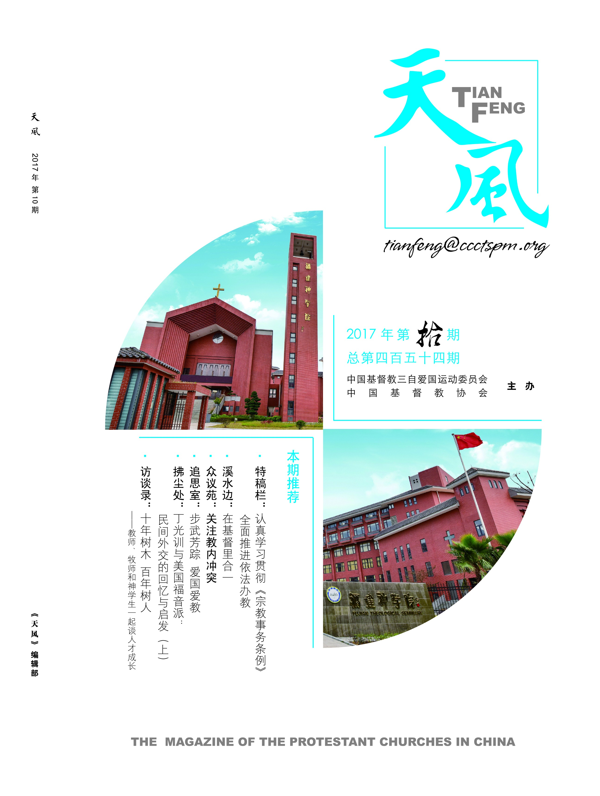

欢迎您访问！
加入收藏
设为首页
联系我们
简体版
繁体版
English
旧版
登录
注册
手机版
APP下载
微信
首页
全国两会
人员组成
部门设置
政策法规
重要文件
规章制度
神学思想建设
新闻动态
本会动态
海外交流
教会活动
时事关注
院校事工
各地教会
教堂风采
神学院校
各地两会
社会服务
社服新闻
项目事工
义工注册
天风在线
天风杂志
信仰教义
灵修语丝
讲章精选
大公信经
新教经典
异端辨析
教义简介
圣经APP
圣经下载
视频音像
新闻视频
讲道视频
活动专题

《天风》2017年第拾期
限免
2017全年：
￥
30.00
主编：
单渭祥
期数：
10
简介：《天风》创刊于1945年，是由中国基督教三自爱国运动委员会，中国基督教协会主办的基督教刊物。杂志宣传国家宗教政策法规，阐述基督教教义，牧养关怀信徒，引导信徒爱国爱教，做光做盐。
在线阅读
加入收藏
天风微信公众号
章节目录
卷首语
1
莫让网络成“网罗”
特稿栏
4
认真学习贯彻《宗教事务条例》全面推进依法办教
6
新修订《条例》体现法制建设的巨大进步
溪水边
7
在基督里合一
9
调和的盐与照亮的光
众议苑
10
教会侍奉过程中的一个冲突个案及其处理
11
议题：关注教内冲突
13
冲突管理：建造爱与和睦的圣职团体
14
防微杜渐远胜亡羊补牢
16
如何看待教会冲突？
17
化解教内冲突刍议
见证会
19
致我亲爱的母亲
事工坊
20
“使命·盼望”中国基督教神学思想建设讲道交流会（中南片区）在郑州举行
22
当献上最美的祭
求索篇
24
《志玄安乐经》释义（五）
27
圣名之争（一）
27
专栏：中国神学三人行（二十九）
28
传福音的动机
29
基督教与中国文化（续四）
圣艺苑
29
爱的雕琢
43
“这是我的兄弟！”（小说）
47
如梦令
48
牵绳之爱
宗教改革500周年纪念专栏
30
马丁·路德寻求得救之道的故事
33
回归基督
38
马丁·路德的天职观及其在基督教中国化过程中的现实意义
争鸣台
35
教会培训收费合适吗？
伦理线
0
最后的100米
追思室
41
步武芳踪 爱国爱教
拂尘处
44
丁光训与美国福音派：民间外交的回忆与启发（上）
47
冷漠是一支箭
53
看见
54
历史文化名人信仰系列之四十六：刘德斋
访谈录
49
十年树木 百年树人——教师、牧师和神学生一起谈人才成长
广角镜
56
“感恩教育”给父母洗脚：是感恩还是作秀？
57
任性父母给女儿取名“王者荣耀”
57
浪漫节俭 共享单车娶新娘
祈祷屋
58
为祖国祈祷
新闻眼
59
国内新闻
62
海外消息
63
域外教会
回应壁
64
不会说“不”怎么办？
近期杂志
更多
《天风》2017年第拾贰期
《天风》创刊于1945年，是由中国基督教三自爱国运动委员会，中国基督教协会主办的基督教刊物。杂志宣传国家宗教政策法规，阐述基督教教义，牧养关怀信徒，引导信徒爱国爱教，做光做盐。
2017-12-11
《天风》2017年第拾壹期
《天风》创刊于1945年，是由中国基督教三自爱国运动委员会，中国基督教协会主办的基督教刊物。杂志宣传国家宗教政策法规，阐述基督教教义，牧养关怀信徒，引导信徒爱国爱教，做光做盐。
2017-12-08
《天风》2017年第玖期
《天风》创刊于1945年，是由中国基督教三自爱国运动委员会，中国基督教协会主办的基督教刊物。杂志宣传国家宗教政策法规，阐述基督教教义，牧养关怀信徒，引导信徒爱国爱教，做光做盐。
2017-12-11
《天风》2017年第捌期
《天风》创刊于1945年，是由中国基督教三自爱国运动委员会，中国基督教协会主办的基督教刊物。杂志宣传国家宗教政策法规，阐述基督教教义，牧养关怀信徒，引导信徒爱国爱教，做光做盐。
2017-12-11
《天风》2017年第柒期
《天风》创刊于1945年，是由中国基督教三自爱国运动委员会，中国基督教协会主办的基督教刊物。杂志宣传国家宗教政策法规，阐述基督教教义，牧养关怀信徒，引导信徒爱国爱教，做光做盐。
2017-12-11
您还未登陆
您是否需要现在前往登陆？
前往
取消

 手机版
手机版

 APP下载
APP下载
 微信
微信
 手机版
APP下载
微信
手机版
APP下载
微信